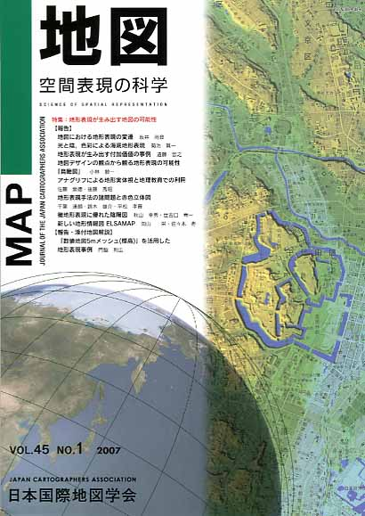
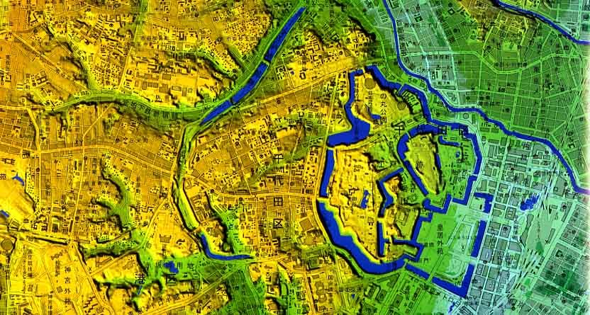

≪No.45 No.1 表紙≫

| 最 新 号 | バックナンバー | 添付地図目録 | 投 稿 規 程 |
Vol.45 No.1 （通巻１７７号） ２００７年 《特集：地形表現が生み出す地図の可能性》
| 【報告】 | 地図における地形表現の変遷 | 坂井尚登 |
| キーワード：18年度大会発表要旨、地図、地形表現 | ||
| 光と陰，色彩による海底地形表現 | 菊池眞一 | |
| キーワード：海底地形、段彩、レリーフコンター法、鳥瞰図、透視法 | ||
| 地形表現が生み出す付加価値の事例 | 遠藤宏之 | |
| キーワード：地形表現、ＤＥＭ、ハザードマップ、陰影段彩図、地図利用 | ||
| 地図デザインの観点から観る地形表現の可能性「鳥瞰図」 | 小林毅一 | |
| キーワード：地形表現、地図デザイン、鳥瞰図、テクスチャ、デザイン感性 | ||
| アナグリフによる地形実体視と地理教育での利用 | 佐藤崇徳・後藤秀昭 | |
| キーワード：アナグリフ、実体視、空中写真、地理教育 | ||
| 地形表現手法の諸問題と赤色立体図 | 千葉達朗・鈴木雄介・平松孝晋 | |
| キーワード：赤色立体地図、航空レーザ測量、陰影図、地上開度、地下開度、尾根谷度 | ||
| 微地形表現に優れた陰陽図 | 秋山幸秀・世古口竜一 | |
| キーワード：三次元データ、ＤＳＭ、ＤＴＭ、ＤＥＭ、立体画像 | ||
| 新しい地形情報図 ELSAMAP | 向山 栄・佐々木寿 | |
| キーワード：地形図、細密地形データ、立体認識、主題図、地形表現 | ||
| 【報告・添付地図解説】 | 「数値地図５ｍメッシュ（標高）」を活用した地形表現事例 | 門脇利広 |
| キーワード：数値地図、標高データ、地形図、航空レーザ測量 | ||
| 【学会記事】 | ||
| 【特別会員のページ】 | 財団法人 日本地図センター | |
| 株式会社 ゼンリン | ||
| 【添付地図】 | 1：25,000デジタル標高地形図「東京都区部」 | |
|
≪No.45 No.1 表紙≫ |
|
|  | |
|
|
|
≪No.45 No.1 添付地図−抜粋≫ |
| 
本図を許可なく複製・利用することを禁止します。 |